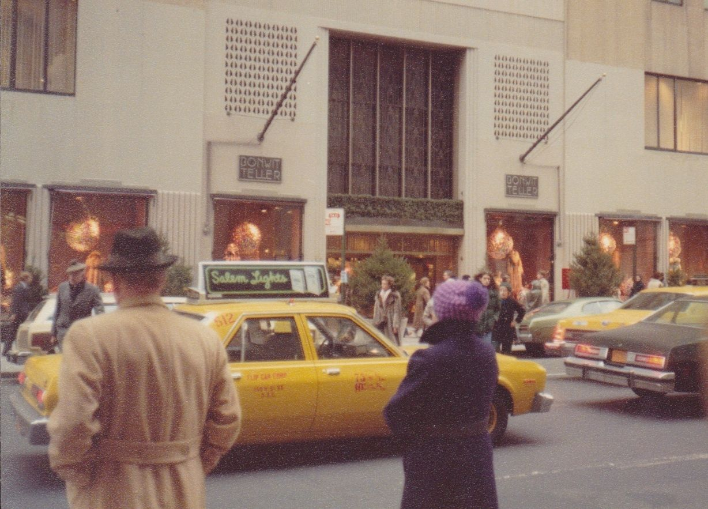
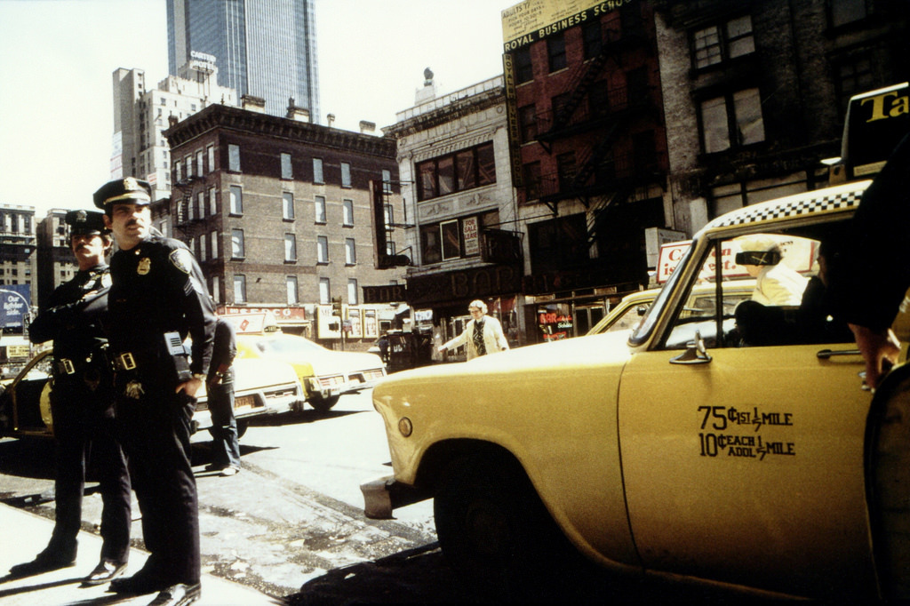

Lazy but badass skateboarder, 1985
Lazy but badass skateboarder, 1985

Hair Power, St Mark’s Place, 1985

Bonwit Teller, 1977


1st Ave and 101st, 1970s
14th Street, entry to the PATH, 1977

Queens Boulevard, 1970s
Cowboy in a phone booth.
7th Avenue and Union Street, Park Slope, Brooklyn

King and MacDougal, 1981
West side of Broadway between 86th and 87th

Enrico Natali, Untitled,51st Street Subway Platform, New York City, USA, 1960
Outside Madison Square Garden, 1981

Times Square, 1970
Hair at the Biltmore, 1970

Rooftops, 1970
B train pulling into Union Square, 1960s

Checker cab and cops, 1978

47th Street, 1978
Stillwell Avenue and Mermaid Avenue in Coney Island, 1978
Park Slope 1988

Second Avenue at 14th St, 1976

Arson at the Chop Suey

A busy night on 42nd and 8th, 1970
Bleecker Street, 1989
loethlifeyoulivelietelifouloe:
Edward G. Robinson photographed by Mario De Biasi in New York, 1949.

The Easter Bunny

High fashion on the A train, 1978

NYC taxi, 1980

“In 1966, when Massimo Vignelli’s firm was hired to come up with new, clearer signage, riders were confronted with a confusing array of signs with no consistent style, as shown in this photo at the Lexington Avenue–59th Street station.” Photo credit: New York Transit Museum; quoted text: NY Daily News

The music of the sewers, 1965

Recruiting cops, 1969
The Palladium in 1979, I’m told

Happy New Year?